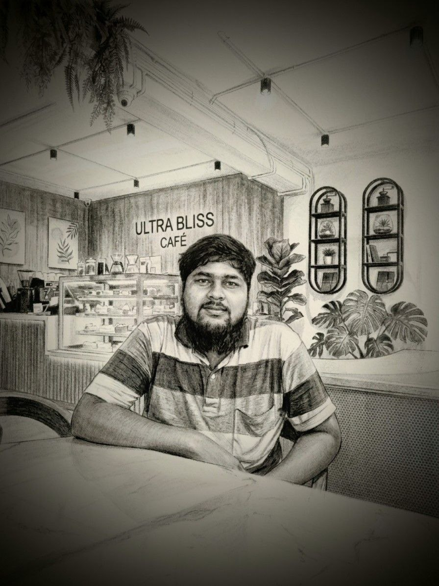

My Work
Calligraphy · Photography · Educational Content



✦ Educator · Calligrapher · Photographer ✦
Inspiring minds through education, art, and visual storytelling. Building a community of learners and dreamers.
A glimpse into my journey and philosophy
I believe education is the most powerful tool to transform lives. As an educator, I've had the privilege of guiding hundreds of students — not just to ace exams, but to think critically, dream boldly, and act with integrity.
Beyond the classroom, I express myself through calligraphy — where every stroke tells a story — and photography, where I capture the beauty of everyday moments. These art forms are my meditation, my voice, and my way of connecting with the world.
My mission is simple: to spread real education, one that empowers, liberates, and creates a ripple of kindness. Whether through teaching, writing, or visual art, I strive to leave a meaningful mark.
“Education is not preparation for life — education is life itself. And art is the language of the soul. Together, they shape a world worth living in.”
Calligraphy · Photography · Education
What drives me every single day
To create a world where every individual has access to quality education, artistic expression, and the confidence to pursue their dreams. I envision a community where learning is joyful, art is celebrated, and every person is empowered to make a positive impact.
To inspire and mentor students through innovative teaching, to preserve the art of calligraphy, and to tell compelling stories through photography. I am committed to building platforms — like Wikifizik Education, Weekly Adda and a science club name Curious Mind Science Club — that nurture talent, foster curiosity, and spread kindness.
Calligraphy · Photography · Educational Content
My recent discoveries and essential recommendations for students
Proud of my students who are making a difference
Physics · 98.6% · Now pursuing
Now at IIT Kharagpur · Computer Science
Medical student at AIIMS Delhi · Inspired by holistic learning
National Science Olympiad · Class 10 · Future researcher
Feedback from the people who know me best.
“একজন ভালো শিক্ষক শুধু বইয়ের সিলেবাস শেষ করান না, তিনি চিন্তাভাবনার ডাইমেনশন বদলে দেন—Nurulla Sir ঠিক এই জায়গাতেই অনন্য। 'শিশু বিকাশ মিশন'-এ ক্লাস ৮-এ স্যারের সাথে প্রথম দেখা, আর আজ ক্লাস ১০-এ দাঁড়িয়ে ২০২৭-এর মাধ্যমিক প্রিপারেশনের এই দীর্ঘ জার্নিতে একটা কথাই বলতে পারি: his teaching style is just next level. স্যার প্রায়ই একটা দারুণ কথা বলেন, "আমাদের এখানকার স্কুলগুলো বেশিরভাগ গাধাকে ঘোড়া বানাতে যায়, কিন্তু যারা আসলে ঘোড়া—তাদের রেসিং ঘোড়া বা শক্তিশালী ঘোড়া বানাতে বেশি চেষ্টা করে না।"..... পুরোটা পড়ুন”
Madhyamik Student · 2027
“I know as a teacher how brilliant u are.. Keep it up sir. students deserve a teacher like u.”
Assistant Teacher · Al-Ameen Mission
“.”
Calligraphy Student · 2025
“”
Parent · 2025
Beyond the classroom — my initiatives and creations
A premier coaching centre for Madhyamik & HS students, offering Physics, Mathematics, and competitive exam preparation (NEET, JEE, Olympiad). Based in Sheakhala, Hooghly — spreading real education with a personal touch.
Visit WikifizikFrom hand-lettered quotes to portrait photography — my art is an extension of my soul. I take commissions for calligraphy pieces, wedding invitations, and photography projects. Let's create something beautiful together.
Contact MeA vibrant Telegram broadcast channel where I share educational content, calligraphy tips, photography insights, and life lessons. Join the community for weekly inspiration and meaningful conversations.
Join Weekly AddaCurious Mind Science Club is a space where young minds explore, experiment and build. From hands-on science experiments and orbotics to programming and career guidance, we turn curiosity into capability- for every stage of the journey.
Join NowFollow me on social media or reach out directly